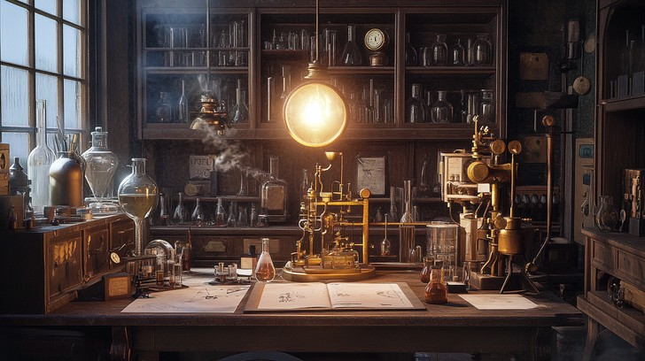

I found Margaret dead in this room and the father hided her body in the attic of this room. She had a very controversial project of creating a language to speak with machines and with the other side. Father Ignatius wasn't very happy about her project. He was very concerned with this strange language that Margaret was creating.